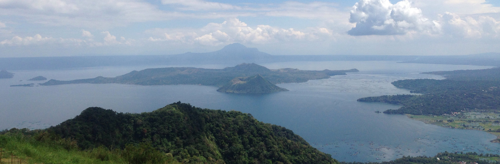
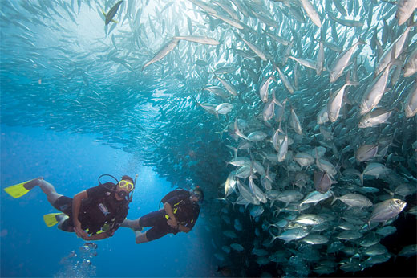
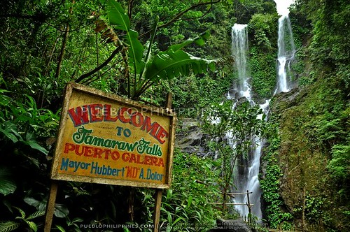
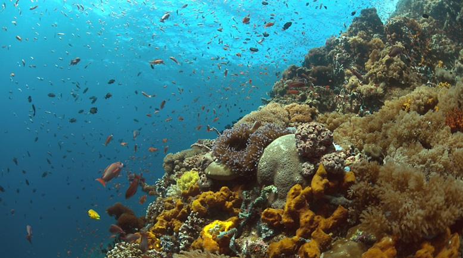

WELCOME TO TAGAYTAY
Batangas is a name formed from the word 'batang' meaning logs (trunks or large branches of trees). Legend has it that logs, locally known as batang, were floating all over the river. The word batang is said to be the root of Batangan, the former name of the city and the province. Historical and current evolution of Batangas is undoubtedly tuning in with its major river in Eastern Batangas the Nile of Batangas -the Calumpang River (Filipino: Ilog Calumpang). Folks say it is shaped like a tuning fork. Hence, it is natural for Batangas to flow its identify, to nourish and enrich: its musical, scientific, medicinal and electrical possibilities -as such with a good tuning fork.
This is a lovely province in Luzon's Southern Tagalog region, located south of Manila/NCR. Here you will find excellent diving spots including Anilao in Mabini, Sombrero Island in Tingloy, Ligpo Island in Bauan, these areas collectively are more popularly known as Anilao. It is home to Taal Lake and Volcano - said to be the lake within the lake, old churches and houses dating back to the Spanish times in Taal Town Proper, Calaca and Batangas City, and the Batangas International and Container Port. There is mountain trekking - in Mt. Maculot in Cuenca and Gulugod Baboy in Mabini. There are fresh-water beaches in the towns around the Lake -- San Nicolas, Agoncillo, Cuenca, Balete, Tanauan and Talisay. Salt-water beaches abound in Matabungkay (Lian town), in Nasugbu, in Calatagan, in Calaca, in Lemery, in Taal, San Luis, Anilao in Mabini, in Bauan, in Lobo, and in Laiya (San Juan town). There are also several island tourist destinations, namely: Tingloy, Ligpo Island, Sombrero Island, and Fortune Island. There are also Industrial Parks and various manufacturing industries dotting the shoreline.
Cavite is known for its rich history and a large number of National Heroes. It is sometimes called Land of the Brave or the History Capital of the Philippines.
Tagaytay is a popular destination of residents of Metro Manila primarily because of its mild climate and dramatic scenery, the most significant of which is the view of Taal Volcano. The weather in Tagaytay is mild and the average temperature is 22-25°C (71-77°F). There are only two 'seasons', wet and dry. It is also a popular holiday town south of Manila on the Philippine island Luzon. Known for its mild climate, it sits on a ridge above Taal Volcano Island, an active volcano surrounded by Taal Lake. Overlooking the area, People’s Park in the Sky occupies the grounds of a never-finished presidential mansion. Picnic Grove is a recreation area with trails and a zip line.
Photo


